A cinema on the wall.Films and series play full screen on Apple TV, with artwork, cast and descriptions found for you.
iPhone · iPad · Mac · Apple TV
Your IPTV, finally beautiful.
CurioPlay takes the playlist your provider gave you and turns it into a home cinema: a real TV guide with catch-up, films and series with artwork, an assistant that understands your library, and a Kids Mode you can trust.
Free with one playlist. No ads, no account, no tracking.
M3U & XtreamXMLTV guide · catch-upOn-device assistantKids Mode with PINArabic-firstiCloud sync
The highlights.
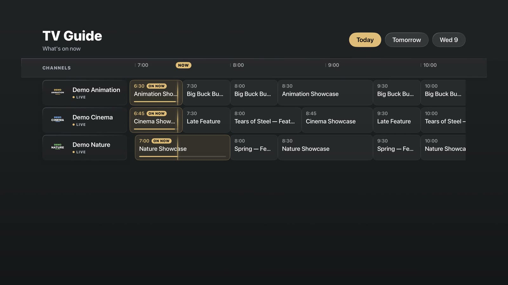
A real programme guide.Today, tomorrow, the week ahead. Replay from the grid where your provider supports catch-up.
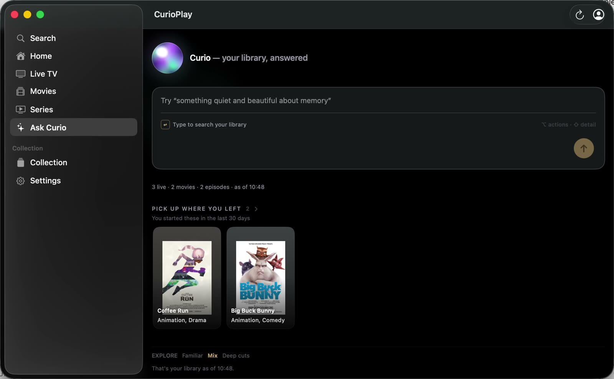
Ask Curio."Something quiet and beautiful for tonight." Answered from your own library, on your device.
A player in its own window.On the Mac a film is a window you move, resize or pop out as Picture in Picture.
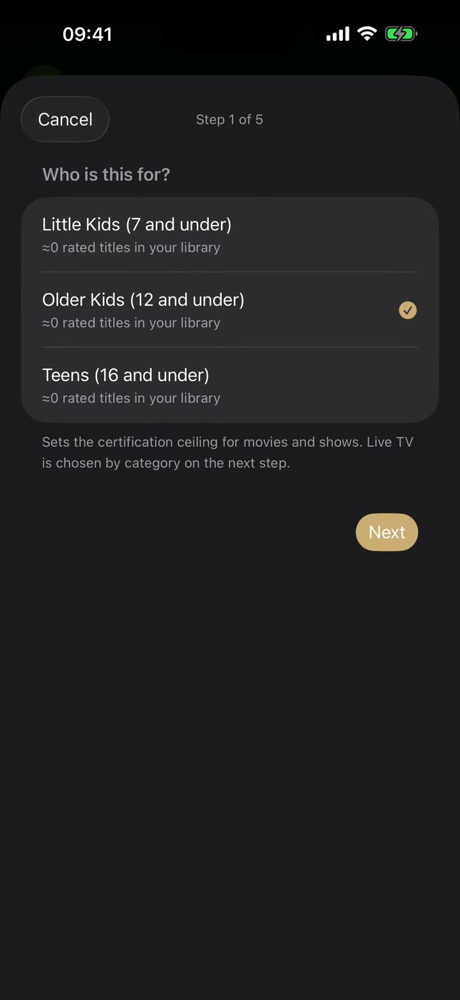
Kids Mode, behind a PIN.Age presets, approved categories, and only the PIN you know lets anyone leave.
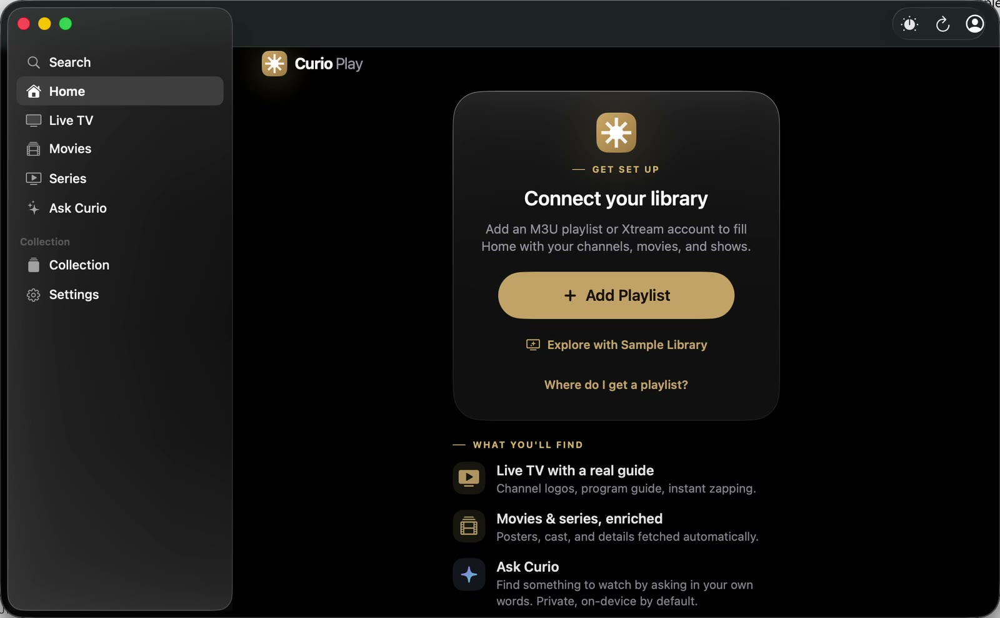
Try it before any provider.The built-in Sample Library fills every screen with Creative Commons films in seconds.
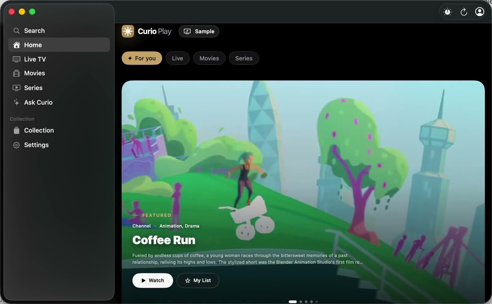
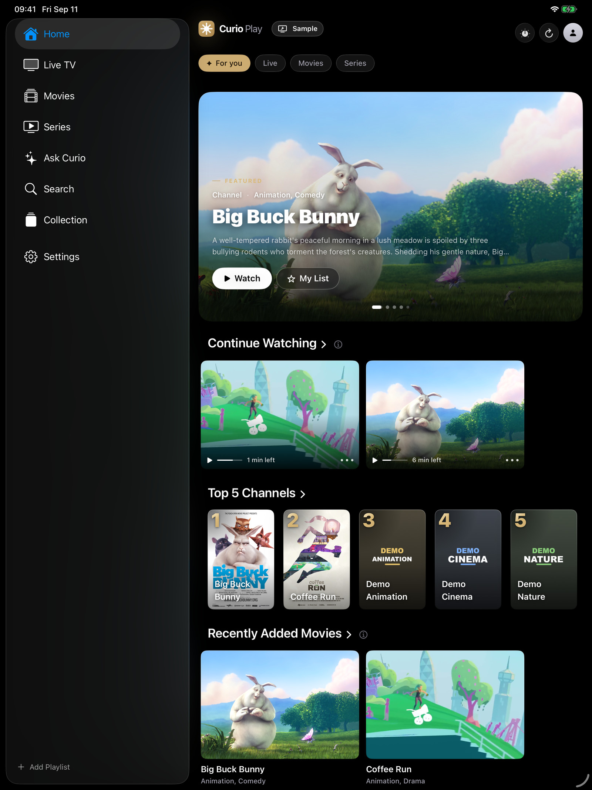
Apple TVRemote-friendly rails, Top Shelf on the Home screen, recording and downloads.
MacA player in its own window, Picture in Picture, AirPlay to the big screen.
iPadSidebar, big artwork, the guide in full width.
iPhonePicture in Picture, AirPlay, SharePlay, widgets, Siri and Shortcuts.
One purchase, four screens
Native everywhere you watch.
Not a phone app stretched onto a TV. Each version is built for its screen and its remote, and with Pro your history, favourites and Up Next follow you through your own iCloud.
Live TV
A real TV guide. Catch-up included.
What's on now and next, today and the week ahead — on the screen you are holding and on the one on the wall.
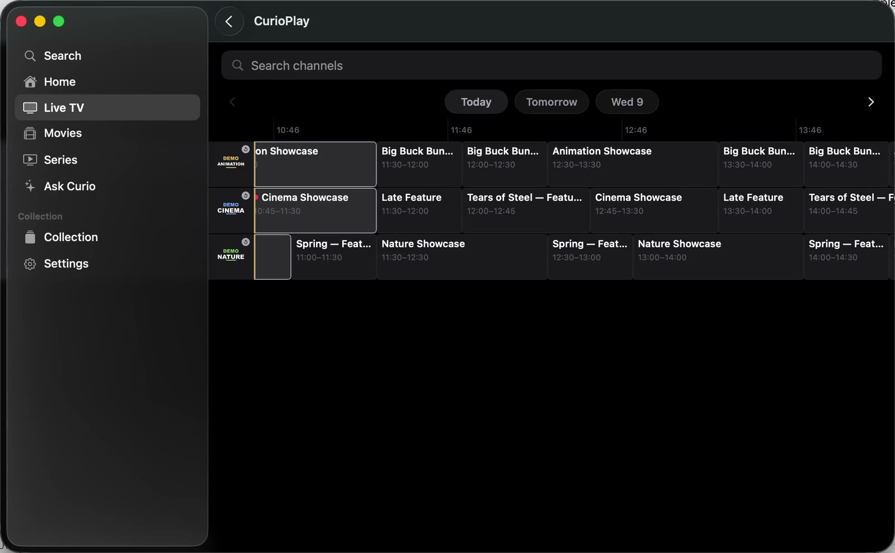
The guide you actually use
Channels by row, programmes by time, today and the week ahead. On Apple TV the remote does the rest.
Record what you're watching
Record live, or schedule a recording straight from the guide. Keep it for later, watch it on the couch or on the train (Pro).
Replay from the grid
Missed it? Select a past programme and it replays, where your provider supports catch-up. Pin the groups you love, hide the rest.
Movies & series
Enriched, on their own.
Posters, cast and descriptions appear without you lifting a finger. Seasons and episodes fall into order.
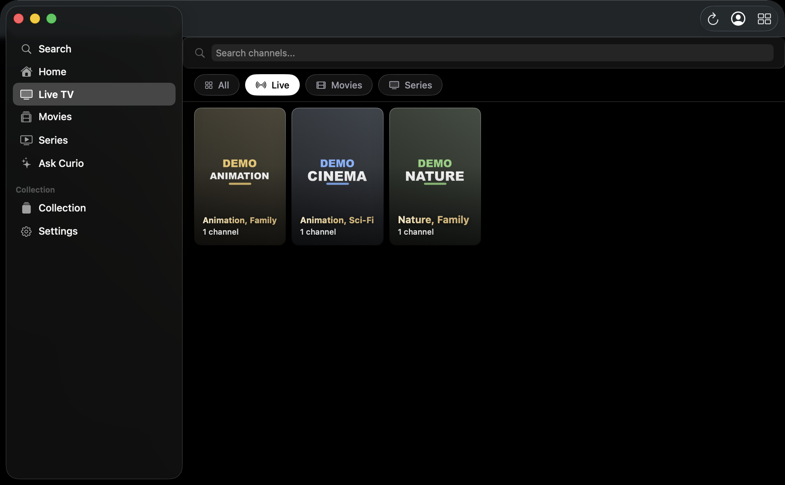
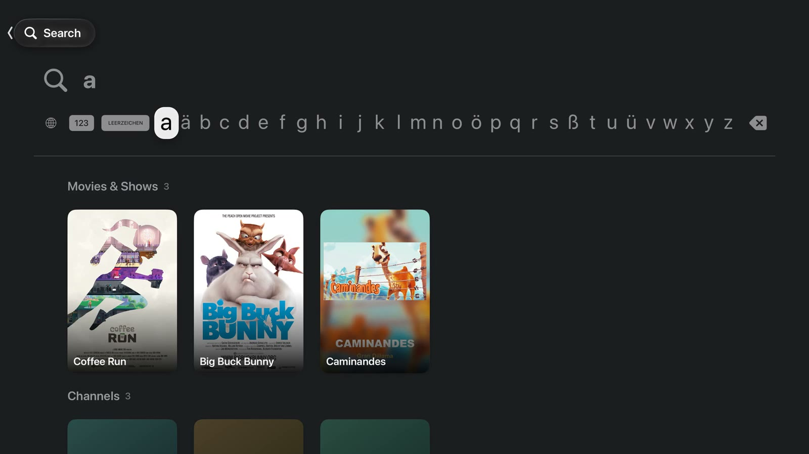
Every title, dressed
Artwork, cast and descriptions are fetched automatically for what you already have. A film opens in its own window on the Mac.
One Collection, every device
Favourites, Up Next, recordings and downloads live in one place. Start a film on the iPhone, finish it on the Mac (Pro sync).
Find anything in seconds
A few letters find channels, films, shows and what's on now, all at once — on Apple TV with the letter bar, on iPhone from Spotlight or Siri.
Ask Curio
Ask for a film, a mood, a night.
"Something quiet and beautiful for tonight." The assistant answers from your own library, in your own words, on your device.
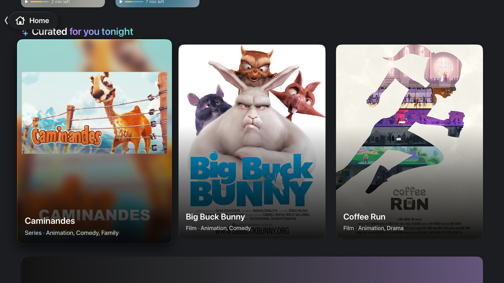
Private by default
Ask Curio runs on Apple's on-device models. The optional cloud assistant is off until you turn it on, and it never sees your provider details.
Curated for you, tonight
Your own watching shapes what comes first. On Apple TV, on the Mac, on the iPhone — the same taste, never shared with anyone.
Family
Kids Mode, locked with a PIN.
Choose an age preset, approve the live categories and the film genres, hand the remote over.
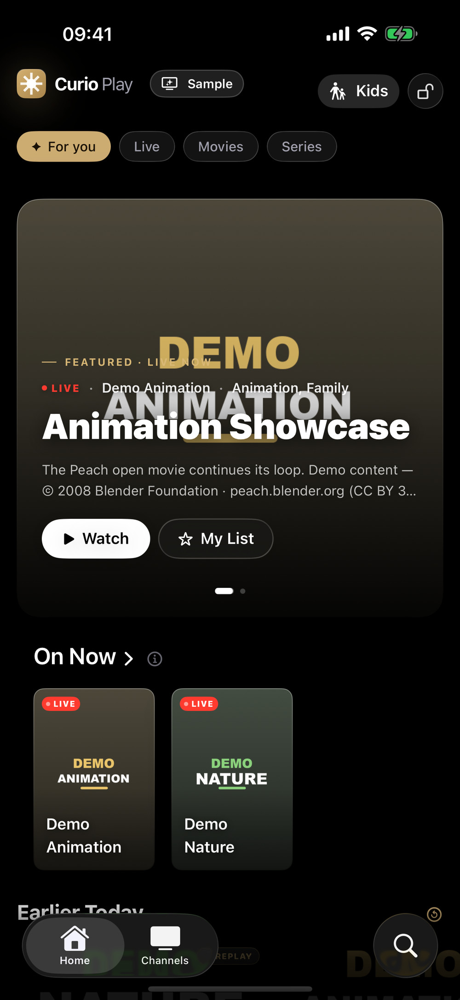
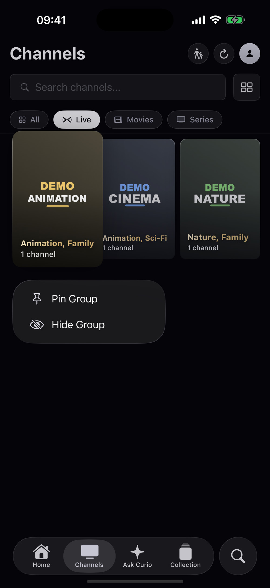
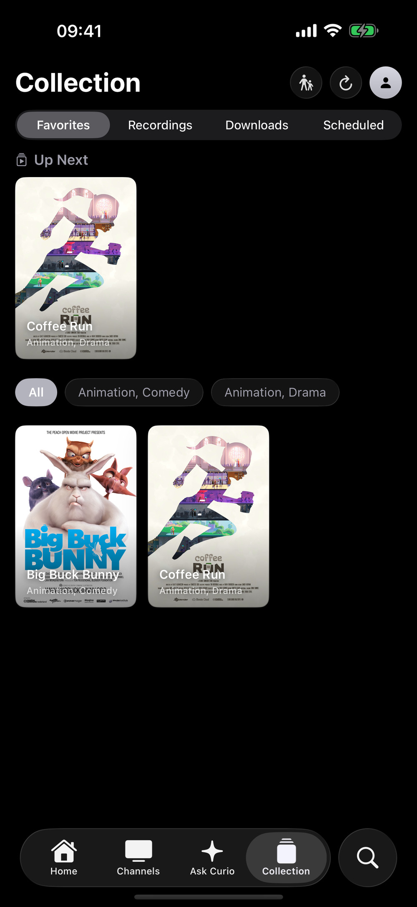
Only what you approve
Little kids, older kids or teens: a preset sets the ceiling, allowlists decide the rest. Leaving needs the PIN only you know.
Arabic done right
Right-to-left titles, search and metadata that simply work — designed from day one, not translated afterwards.
Yours, everywhere
Favourites, Up Next, recordings and downloads in one Collection, synced through your own iCloud with Pro.
Everything, on every screen
Built for Apple, all of it.
TV guideNow, next, the whole week, from XMLTV.
Catch-upReplay past programmes from the grid.
RecordingRecord live or schedule it. Keep it for later.
Ask CurioOn-device assistant, your library, your words.
Kids ModeAge presets and a parental PIN.
Arabic-firstRight-to-left titles, search and metadata.
Picture in PictureKeep watching while you browse.
AirPlayTo the big screen and HomePod.
SharePlayWatch together over FaceTime.
Siri & Shortcuts"Watch something on CurioPlay."
Widgets & Top ShelfUp Next on the Home screen and on Apple TV.
iCloud syncHistory, favourites and resume follow you (Pro).
In motion
See it move.
Real captures of the app playing the built-in Sample Library. No provider involved.
Apple TV — a film, full screen
Mac — live TV with the guide
iPhone — from the guide to playback
How to
Up and running in a minute.
Short clips recorded in the app on every screen. Sound off, nothing to install but the app.
iPhone
Add your playlistConnect Playlist (later: Settings → Add Playlist), then paste the M3U link or file, or your Xtream login. Nothing else to configure.
iPhone
Or try the Sample LibraryNo provider yet? Explore with Sample Library fills the app with Creative Commons films and a guided tour.
iPhone
The guide, then playChannels → the guide button. Pick a day, select what's on, it plays.
iPhone
Kids Mode in five stepsSettings → Parental Controls: unlock with your PIN, choose the age, approve categories, save and enter Kids Mode.
Mac
Mac: start with the Sample LibraryThe first-run screen offers it on the Mac too; the library fills in seconds, guide included.
Mac
Mac: the guideLive TV in the sidebar, the guide button top right, days along the top.
Mac
Mac: a film in its own windowOpen a title, press Play; the player is a real window you can move, resize or pop out as Picture in Picture.
Mac
Mac: Ask CurioType a mood or a title; the assistant answers from your own library, on the Mac's own silicon.
Apple TV
Apple TV: Live TV and the guideThe Live tab shows what's on now; select TV Guide for the full grid, today and the days ahead.
Apple TV
Apple TV: a channel pageEvery channel has a page with today's schedule, Watch Live, favourite and record.
Apple TV
Apple TV: search by lettersOne letter narrows films, shows and channels at once; no typing marathon on the remote.
Free, for real
Everything you need is free.
Pro is for households with more than one provider, and for watching everywhere.
| Freewith one playlist | CurioPlay Promonthly · yearly with 7-day trial · lifetime | |
|---|---|---|
| Live TV with instant zapping and the full guide | ✓ | ✓ |
| Movies & series with artwork, cast and descriptions | ✓ | ✓ |
| Search, Ask Curio, Kids Mode | ✓ | ✓ |
| Picture in Picture, AirPlay, SharePlay, Siri | ✓ | ✓ |
| No ads, no account, no tracking | ✓ | ✓ |
| All your playlists and providers in one place | — | ✓ |
| iCloud sync of history, favourites and resume across iPhone, iPad, Mac and Apple TV | — | ✓ |
| Catch-up, recording and downloads | — | ✓ |
One purchase covers all your Apple devices through Family Sharing-compatible App Store billing.
Questions
Straight answers.
Does CurioPlay come with channels?
No. CurioPlay is a player, like a browser is not the websites. It contains no channels, streams or content and does not help you find any. You connect the playlist your own IPTV provider gave you, and you confirm your right to it in our Terms of Use.
Which formats and providers work?
M3U and M3U8 playlists (link or file), Xtream Codes logins and XMLTV guides, which covers nearly every provider. Live TV, movies and series, with catch-up where your provider supports it.
Is the app translated?
The app speaks English, French and Arabic, with full right-to-left support. The App Store listing is also in German.
Is there an account or any tracking?
No account, no tracking, no ads, no analytics SDK. Your playlists and viewing stay on your device, and in your own iCloud if you turn sync on. The Privacy Policy lists every connection the app makes.
Which devices and versions?
iPhone and iPad with iOS 26, Mac with macOS 26 (Apple silicon and Intel), Apple TV with tvOS 26. One purchase covers all of them.
Something does not play. What now?
Most playback problems come from the provider's side (a paused subscription, a changed link, a server limit). Refresh the playlist in Settings, check the link with your provider, then write to us with the app version and what you see; we answer every message.